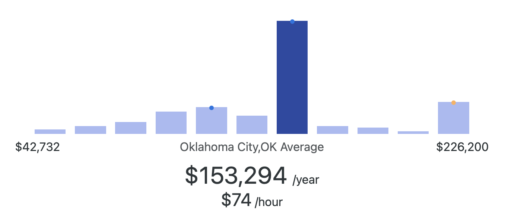

Data Scientist Career Opportunities
Average Salary
$153,294 per year.

What Do Data Scientists Do?
Data scientists analyze and interpret complex data to help organizations make informed decisions. They use statistical methods, machine learning algorithms, and data visualization techniques to uncover trends, build predictive models, and provide actionable insights. Data scientists often work with big data, collaborate with engineers to manage data pipelines, and partner with business leaders to solve real-world challenges. Their work is critical in fields like healthcare, finance, technology, and retail.
Companies Offering Opportunities
Here are some companies that regularly hire or provide internships for data science roles:
- Paycom (Oklahoma City – opportunities in data analytics and business intelligence)
- Devon Energy (Oklahoma City – data-driven solutions in energy operations)
- Chesapeake Energy (Oklahoma City – analytics and forecasting teams)
- Love’s Travel Stops & Country Stores (Oklahoma City – business data analysis roles)
- Amazon (national – data science internships and full-time roles)
- Microsoft (national – data and AI engineering programs)
- Google (national – machine learning and data science teams)